- Supports natural collagen production
- Increases serums absorption
- See visible results after one treatment
- Recommended by Dermatoligists


The Micro Infusion Anti‑Aging System™
Reveal the appearance of firmer, younger & more even-looking skin in just a few, easy at-home applications or get your money back!*
Select Your Supply:
OR pay 4 monthly payments of {$dyn} with


Auto-ships · Cancel anytime · No commitment
Key Benefits
The Micro-Infusion System creates micro-channels on the skin’s surface to enhance serum absorption for visible improvements.
Visible benefits include*:
- Helps smooth the appearance of fine lines and wrinkles
- Supports a brighter, more even-looking skin tone
- Visibly plumps and supports smoother-looking skin texture
- Leaves skin with a fresh, dewy-looking glow
*As reported by customers in self-perception surveys and before-and-after images. Individual results may vary
How To Use
The Micro-Infusion System is designed to be simple, mess-free, and beginner-friendly. Each treatment takes just a few minutes and fits easily into your nighttime routine.
- Fill the device with one serum ampule, attach the needle head, and let it soak for 1–2 minutes.
- Start at the centre of your face and work outward, doing 2–3 passes in each area of your face.
- Pat in any leftover serum and leave on overnight.
Each order of Micro-Infusion comes with a detailed user guide to walk you through setup and treatment.
Full Ingredient List
Serum for Dark Spots:
Rosa Damascena Flower Water, Propanediol, Glycerin, Panthenol, Niacinamide, Myrothamnus Flabellifolia Leaf/Stem Extract, Water, Butylene Glycol, Hydroxyacetophenone, Copper Tripeptide-1, Beta-Glucan, Chrysanthellum Indicum Extract, Ethylhexylglycerin, Sodium Hyaluronate, Allantoin, Xanthan Gum
Serum for Wrinkles:
Rosa Damascena Flower Water, Propanediol, Glycerin, Tranexamic Acid, Niacinamide, Panthenol, Chrysanthellum Indicum Extract, Ethylhexylglycerin, Tripeptide-1, Xanthan Gum, Allantoin, Sh-Oligopeptide-1
- Vegan and cruelty-free
- Suitable for sensitive skin


- +50
50+ Board Certified Dermatologists recommend Qure to their patients.
 Try it now with zero risk.
Try it now with zero risk.
Our 90-day money-back guarantee.
Jump To
Customer Transformations
Based on individual user experience. Results may vary.
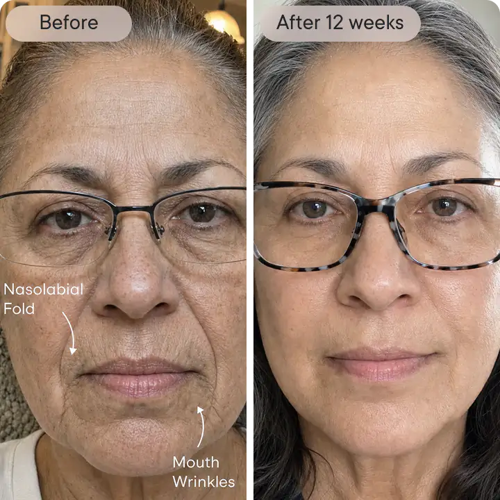
 Sandra L
Sandra L
Verified customer
Mouth Wrinkles
“The vertical lines above my lip aged me more than anything else. Every two weeks with the wrinkle serum. By month two, the lines looked visibly smoother and my lipstick stopped bleeding into them. My skin there feels more hydrated day to day now.”
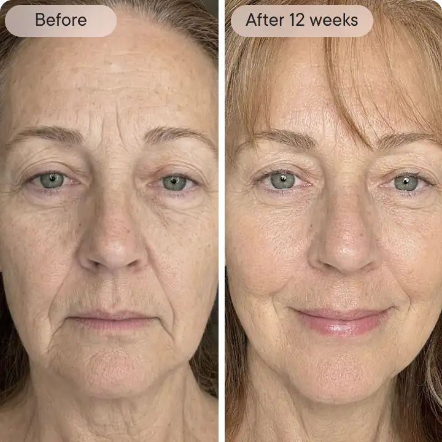
 Angela R
Angela R
Verified customer
Mouth Wrinkles
“My lipstick used to feather into every line around my mouth. Every other week, 2-3 passes like the guide says. By treatment five, lipstick stayed put better and the lines themselves looked shallower. Stings for a few seconds on the lip line, then it's done.”
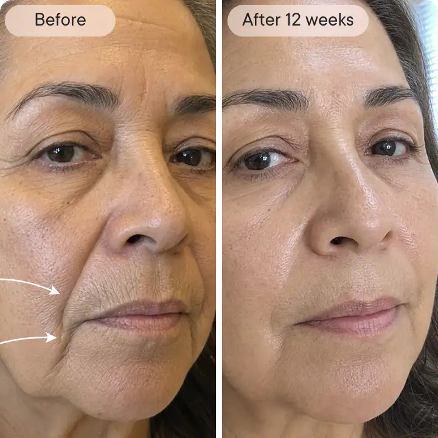
Michelle D
Verified customer
Mouth Wrinkles
“I doubted an at-home tool could touch my deeper mouth lines. Committed to the full 3-month plan, every two weeks. By treatment seven, the lines looked visibly less pronounced and my skin there felt smoother than in years. My partner noticed before I said anything.”
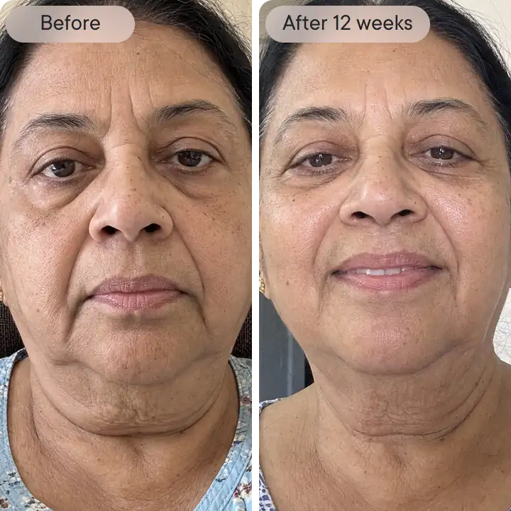
Barbara S
Verified customer
Nasolabial Folds
“I'd had nasolabial filler before but didn't love the added fullness. Every two weeks for three months with Qure instead. The folds around my nose and mouth look visibly softer with no added volume. I've pushed my filler appointments out much further now.”
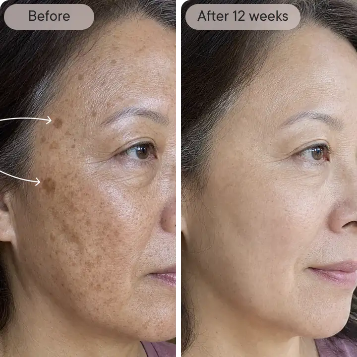
Marissa T
Verified customer
Dark spots
“Years of sun damage left dark spots across my cheeks that no serum ever touched. Every two weeks with the brightening serum, and by treatment four, my spots looked visibly faded and my tone looked more even. My foundation goes on smoother now too.”
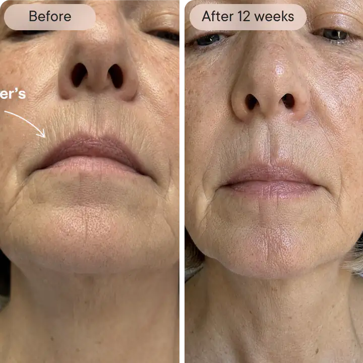
Denise M
Verified customer
Smokers lines
“I quit smoking years ago but the lines above my lip stuck around. A little sore for a few hours after each treatment, but nothing major. My before-and-afters are four weeks apart and the lines already look visibly softer. Really easy to use.”
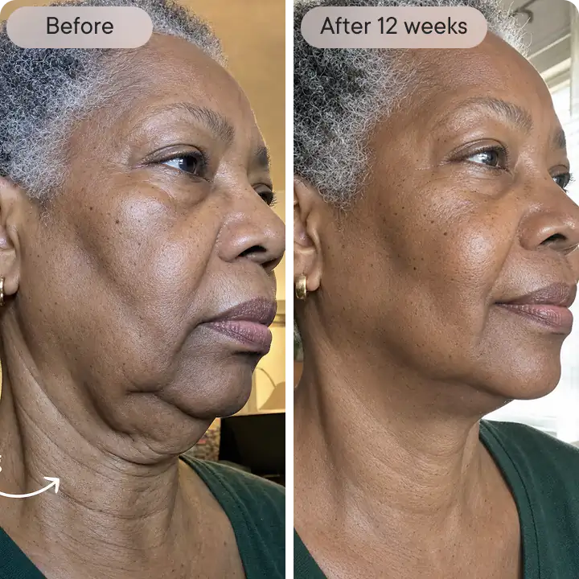
Leslie B
Verified customer
Neck sagging
“Truly impressed! After using for one month, I can see a drastic change in my neck area. Hoping my neck continues to improve with further treatments. Will be ordering again and have told several people about this product already.”
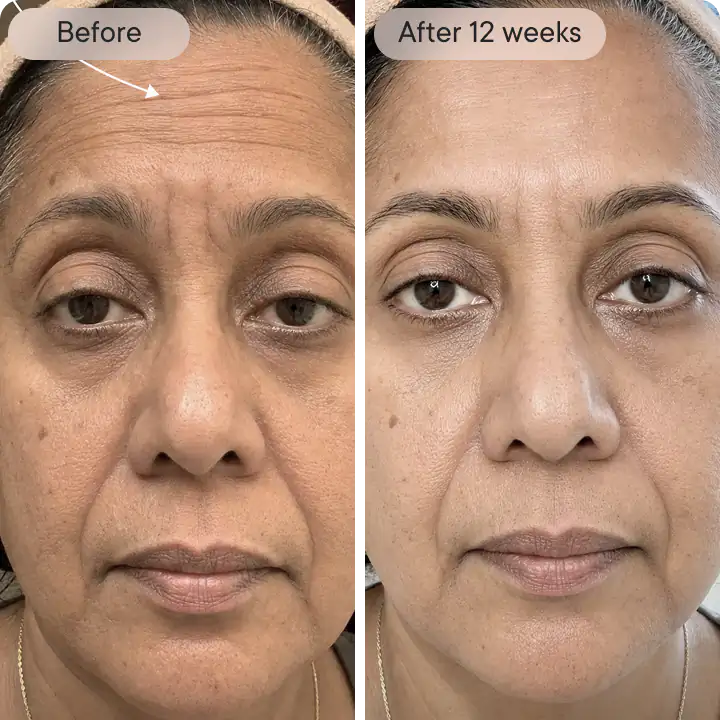
Rebecca S
Verified customer
Forehead wrinkles
“After just one day, my skin already looked healthier and I could see a reduction in my forehead lines. Excited to see what happens over the next three months of consistent treatments every two weeks. Easy to fit into my nighttime routine.”
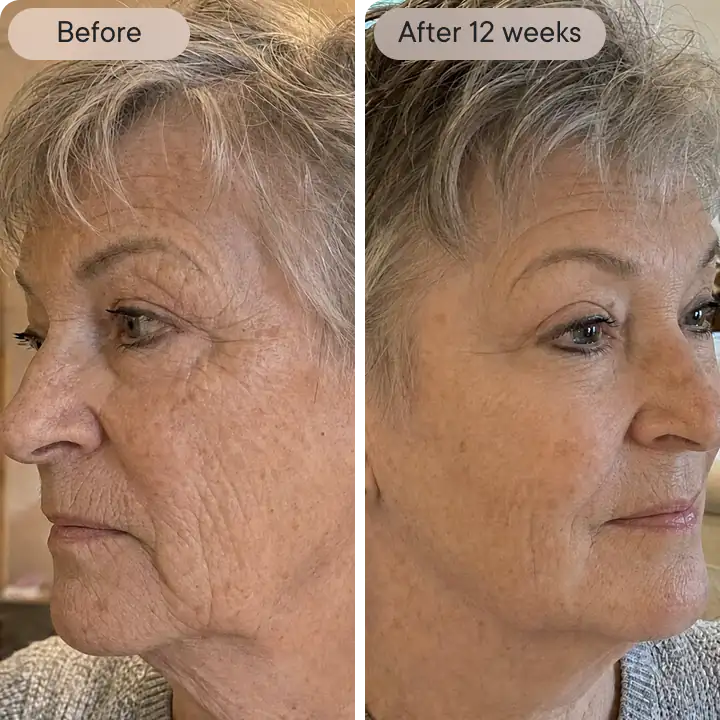
Carol B
Verified customer
Eye Wrinkles
“I'm 61 and the lines by my eyes have bothered me for years. Every two weeks, five minutes, no downtime. By treatment four, my daughter noticed my eye area looked smoother in photos. The crepiness has softened and makeup doesn't settle into the lines like before.”
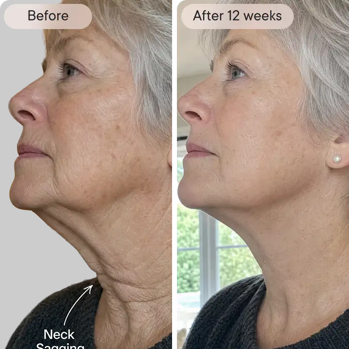
Diane R
Verified customer
Neck sagging
“I always focused on my face and neglected my neck until it started sagging. Ten treatments over five months using the wrinkle serum on my neck, and the skin there looks visibly tighter and more toned. A slow, steady improvement that's kept me consistent.”
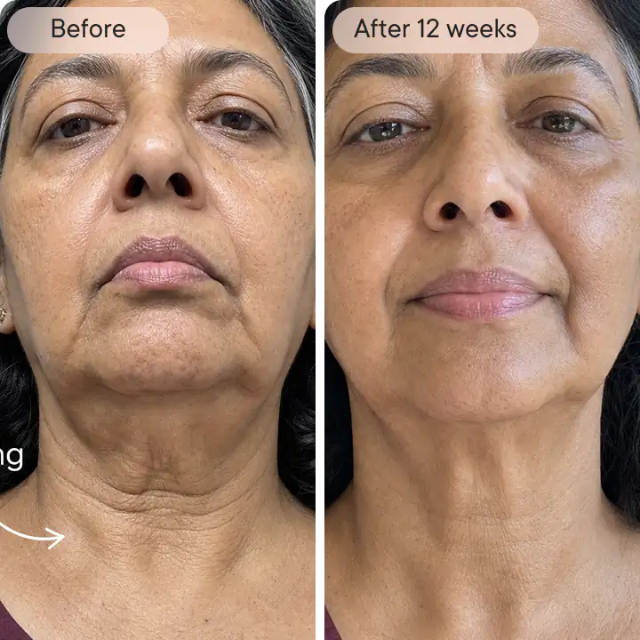
Susan A.
Verified customer
Neck sagging
“My neck started showing horizontal creases and looser skin before anything else on my face did. Every two weeks for two months, and my neck skin looks visibly firmer and the creases look softer. My scarves stopped feeling like a necessity.”
Dermatologist Backed, Award Winning
Qure’s Micro-Infusion goes where your skin cream can’t…
Its tiny, almost painless, 24K gold plated 0.5mm microneedles penetrate beyond the skin’s surface to gently create controlled trauma in your skin which help boost the feel of firmness, smooth texture and reduce the look of fine lines and wrinkles.
The invisible micro-channels then infuse science-backed serums into your skin that are tailored to treat your specific skin concerns, increasing absorption and delivering powerful active ingredients exactly where they’re needed.

See how quick and easy it is to use
-

Cleanse
Cleanse your face thoroughly and spritz the Dermal Mist to refresh and prepare your skin further.
-

Prepare
Twist off the cap of the serum vial and screw on the sterile needle head.
-

Treat
Remove the cap and stamp gently across your face using light pressure, working section-by-section.


Qure is Clinically Proven
In an independent clinical evaluation of dermatologic safety-in-use, the Micro-Infusion System was tested across 31 subjects spanning all Fitzpatrick skin types (I–VI) — from the lightest to the deepest skin tones. No adverse reactions were reported or observed throughout the entire evaluation period.
Evaluated by a Board-Certified Dermatologist,
Independent Testing Clinic, NJ, 2026.

Proven to visually improve
Fine Lines & Wrinkles
Proven to visually improve
Large Pores & Skin Texture
Proven to visually improve
Dark Spots & Texture
Proven to visually improve
Uneven Skin Tone-
70%of participants say their fine lines looked smoother.
-
93%noticed results the next day after their first Micro-Infusion treatment.
-
70%of participants say their skin looked brighter and more even toned.
-
Free Shipping On
Orders Over {$dyn} -
Dermatologist
Reviewed -
Buy Now, Pay Later
Options Available -
Proven Results,
Backed By Science
Powerful ingredients. Backed by science.
Formulated by Experts
Recommended by Dermatologists

Dr. Shah
Board Certified Dermatologist
Board Certified Dermatologist
“This treatment is an at-home option for those who want to avoid the hassle or cost of going to the office.”

Dr. Maxfield
Board Certified Dermatologist
Board Certified Dermatologist
“Qure do studies on this, taking a look at how effective it is, so you can have confidence it’s going to help what you’re doing for your skincare routine.”

Dr. Tripathi
Double Board Certified Facial Plastic Surgeon
Double Board Certified Facial Plastic Surgeon
“I love that Qure Skincare products go beyond just topical treatments, helping to maintain the results of in-office procedures.”

Dr. Stephens
Board Certified Dermatologist
Board Certified Dermatologist
“The Qure Micro-Infusion stamping device offers a safe and effective solution for a variety of different skin conditions.”
Try it now with zero risk.
Our 90-day money-back guarantee.
We’re confident you’ll love your results — but if you don’t, we’ve got you covered.
Try the Micro-Infusion System for 90 days at-home. If you’re not seeing smoother, more radiant skin, simply return it for a full refund.
FEATURED IN


Have questions?
What are the benefits of Micro-Infusion?
The stamping action of the Micro-Infusion device creates tiny micro-channels on the surface of the skin, helping to enhance the absorption of active ingredients and visibly refresh the complexion.
The serum you choose during your Micro-Infusion treatment will deliver visible results over time. Very fine needles help apply concentrated ingredients exactly where they’re needed to target specific skin concerns with precision.
You can switch up your treatments or even mix the two serums together!
Visible benefits of Micro-Infusion may include:
- More even-looking skin tone and texture
- Glowing, refreshed-looking complexion
- Softer-looking fine lines
- Skin that feels renewed and rejuvenated
How quickly will I see results?
Micro-Infusion treatment is an effective skin-boosting step, and many users report a visible radiance boost, glowy-looking complexion, and skin that feels more hydrated within a day or two after their first treatment.
The more consistently you use the treatment, the more visible improvements you’ll likely notice over time. This easy-at-home facial is perfect to use a day or two before a big event, when you want your complexion to look and feel refreshed.
Don’t forget to keep up with your everyday skincare routine to help maintain the results of your Micro-Infusion treatment and keep your skin looking its best long-term.
Timeline of Visible Results
After 1–2 Treatments (Weeks 1–4):
- Typically users experience mild redness post-treatment – this is a normal response!
- Skin looks more hydrated, plumped, and refreshed.
- Complexion appears smoother and more radiant.
After 4 Treatments (Around 8 Weeks):
- Fine lines begin to appear softened.
- Skin tone looks more even and bright.
- Hydration feels longer-lasting.
After 6+ Treatments (12 Weeks and Beyond):
- Complexion looks clearer and more balanced.
- Skin feels firmer with improved elasticity.
- Texture appears smoother and more refined.
- Overall skin looks more resilient and youthful.
Is it painful to use?
You can expect minimal discomfort and maximum results with Qure’s Micro-Infusion System.
Although the needles themselves are finer than most at-home needling systems (making it more comfortable), the ultra-fine tips are thinner than a human hair, so you’ll feel only a mild sensation during treatment.
During the initial stages of use, you may experience a slight sensation or pricking feeling as the needles make contact with the skin, but you’ll quickly get used to the feeling.
How often can I use the treatment?
We recommend performing a Micro-Infusion treatment every 2 weeks for best results.
When is the best time to do Micro-Infusion?
We recommend doing the treatment at night before bed. Avoid being in the sun and using makeup for 24 hours after treatment. For more information on post-treatment care, visit our safety guide.
Can I use it around the eyes and on the neck?
Yes, you can use Micro-Infusion around the eye area to help smooth crow’s feet. Just ensure to apply a very gentle pressure and only do one pass. Monitor your skin accordingly as everyone’s skin is different.
Performing Micro-Infusion on the neck can help improve the look of fine lines and rejuvenate the skin’s appearance. It can target issues such as neck creases, horizontal lines, and age-related skin concerns to help enhance the overall texture, tone, and look of this area.
Can I use a different serum with the Micro-Infusion device?
No — only use the provided Qure serum with your Micro-Infusion Device.
Please keep in mind that not all serums are suitable for Micro-Infusion. Some may cause irritation and should be avoided. Our serums and ampoules are specifically developed for Qure’s Micro-Infusion System, with gentle, fragrance-free formulas designed with care for all skin types.
How is this different to micro-rolling?
Micro-Infusion focuses on improving the skin’s appearance by creating micro-channels on the skin’s surface. It does not alter or affect skin structure or function.
With Micro-Infusion, you not only enjoy the visible benefits of micro-needling, but also deliver science-backed ingredients to targeted areas with precision — helping the skin appear smoother and more radiant.
Tranexamic Acid Notice
If you live in Australia, you may receive a notice from Border Force regarding tranexamic acid (TXA) in your order. Here’s what you need to know:
In Australia, TXA is classified as a Schedule 4 (prescription-only) drug only when used orally or by injection for treating melasma or other medical conditions. However, topical TXA in cosmetic formulations is permitted.
Our serums are purely for cosmetic use and do not claim to treat medical conditions. They are applied topically (not injected) and are classified as a cosmetic product rather than a prescription medicine.
Our products are compliant with Australian regulations. Facial serums containing up to 3% TXA for cosmetic purposes are not classified as prescription-only medicines and do not require inclusion in the Australian Register of Therapeutic Goods (ARTG).
If Border Force requires clarification, you can provide the information above to confirm that the product complies with Australian regulations. If further details are needed, they can refer to the Therapeutic Goods Administration (TGA) guidelines on cosmetic formulations.
If you need further assistance, feel free to contact our support team — we’re happy to help!
Don't see your question? Ask us